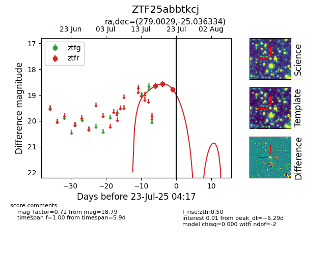

Target ZTF25abbtkcj at 2025-07-23 12:37, see:
FINK: fink-portal.org/ZTF25abbtkcj
Lasair: lasair-ztf.lsst.ac.uk/objects/ZTF25abbtkcj
ALeRCE: alerce.online/object/ZTF25abbtkcj
alt names
ZTF25abbtkcj (ztf,fink)
coordinates:
equatorial (ra, dec) = (279.0029,-25.03633)
galactic (l, b) = (8.8293,-7.97459)
photometry
last ztfr=18.79
3 ztfr detections
